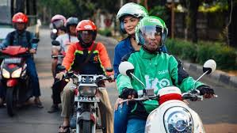

Tentang GO-JEKKU
GO-JEKKU adalah layanan ojek online yang bertujuan untuk memberikan kemudahan, keamanan, dan kenyamanan dalam perjalanan Anda. Kami berkomitmen untuk menghadirkan layanan terbaik dengan driver yang profesional dan berpengalaman. Setiap perjalanan dengan GO-JEKKU dijamin dengan protokol keamanan yang ketat.
Visi kami adalah menjadi penyedia layanan transportasi terbaik di Indonesia dengan mengutamakan kepuasan pelanggan. Kami terus berinovasi dan berkembang untuk memberikan pelayanan yang lebih baik setiap harinya.
